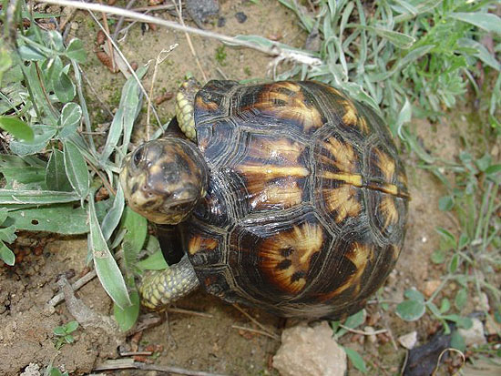
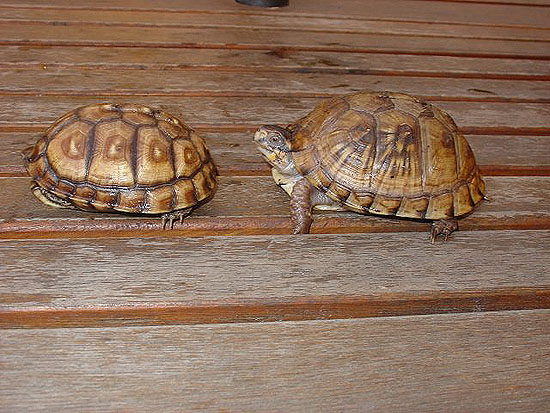

|
DIFERENCIACIÓN DE LAS CUATRO SUBESPECIES ESTADOUNIDENSES DE
Terrapene carolina EN INDIVIDUOS JUVENILES
Txema López, 2007
No es difícil
encontrar en los libros o navegando un poco por internet una
descripción de las diferencias entre las 4 subespecies norteamericanas
de Terrapene carolina, sobre todo en sitios estadounidenses.
Sin embargo, estas descripciones suelen mostrar dos carencias cara al
usuario español y europeo en general. Obviando el idioma, la primera
de ellas es que las diferencias se ilustran siempre sobre animales
adultos, y a veces muy viejos, de origen salvaje que han difuminado ya
en parte o totalmente su pigmentación original y la segunda, que las
Terrapene suelen considerarse las tortugas de “juguete” o de
“usar y tirar” por parte de los aficionados americanos, ya que muchas
de ellas son recolectadas aún hoy en día en su medio natural, pese a
la prohibición existente en muchos estados. Esto hace que la
información disponible sea muy somera o de tipo científico, elaborada
por biólogos y poco orientada al aficionado medio. El hecho de que
también esté prohibida la exportación de las tortugas de caja implica
que la mayoría de los animales disponibles en Europa sean juveniles,
descendientes de los pocos supervivientes de las exportaciones masivas
llevadas a cabo tras la prohibición del comercio de las Testudo
en Europa. Tras la desaparición temporal de los comercios de las T.
hermanni y T. graeca, durante los 80 y hasta mediados de
los 90, el mercado de mascotas se aprovisionó de las hasta entonces
nada conocidas tortugas de caja americanas. Su bajo precio (entre 18 y
60 euros), la falta de información y las malas condiciones en que se
mantenían unos animales salvajes, que habían permanecido hacinados
largo tiempo desde que fueran recolectados, muchas veces durante la
hibernación, hizo que murieran la inmensa mayoría de ellos. Los que no
murieron y consiguieron adaptarse lo hicieron sólo por su fortaleza,
puesto que venían fuertemente parasitados y estresados, siendo la
información disponible en la época más bien muy escasa. Estas
circunstancias alimentaron también la leyenda de que las tortugas de
caja son animales huidizos y tímidos. Nada más lejos de la realidad.
Estos pocos
supervivientes, en un pequeño número, han conseguido ser reproducidos
en cautividad por algunos aficionados entre los que me incluyo, tras
haber conseguido juntar varios de estos animales importados y algunos
pocos de segunda generación. Gracias a esto, se ha conseguido que no
sean tan difíciles de de encontrar en el mercado europeo como en un
tiempo lo fueron, sobre todo entre 1997 y 2002. No obstante, no todas
las subespecies se encuentran con igual facilidad, y la explicación es
bastante sencilla. El último estado que permitió la exportación de
tortugas de caja fue Lousiana, donde conviven principalmente dos
subespecies: la Terrapene carolina major y la Terrapene
carolina triunguis, y mucho ojo, sus intergrados, que en ciertas
zonas son realmente abundantes. En menor extensión se da la
Terrapene carolina carolina. La que no aparece de ninguna manera
en Louisiana es la Terrapene carolina bauri, circunscrita casi
en su totalidad en Florida, que ya muy pronto prohibió las
importaciones. Es por esto que las Terrapenes que más
fácilmente vamos a encontrarnos son las T.c. major, por otra
razón añadida: al ser la subespecie de mayor tamaño, también es la que
mayor número de huevos pone , y por extensión la que más crías
produce. En segundo lugar encontramos las T.c. triunguis,
luego, a una distancia considerable las T. c. carolina y
anecdóticamente la T. c. bauri. Quien disponga de animales
sueltos de la época, me atrevería a asegurar en la mayoría de los
casos que se trata de ejemplares de T. c. major, T.c.
triunguis o sus intergrados.
Todas estas razones
me llevan a intentar dilucidar la subespecie de los animales que
podemos adquirir ilustrando la explicación con animales juveniles. Va
a ser bastante difícil hacerse hoy en día con un animal adulto y creo
que puede ser de gran ayuda enfocar este tema con animales juveniles.
En la medida de lo posible voy a intentar también distinguir los
posibles intergrados (cruces entre subespecies, por tanto “no
híbridos”). Voy a intentar seguir la explicación que da Dodd en su
fabuloso libro sobre las tortugas de caja para explicar las
diferencias.
Hay un concepto que
antes de entrar en detalles es interesante conocer:
La fórmula
falangeal es una manera de comparar animales contando el número de
falanges que tienen en cada uno de sus dígitos. Puede ser utilizada
para estudiar la filogenia del animal (a grosso modo la familia
de especies en que se encuadra) o para predecir el uso que da a sus
manos y pies. Se suele dar con un número simple. En la siguiente foto
vemos la foto de la extremidad de una ardilla, que tiene cinco dedos y
una fórmula falangeal de 5 números, los que componen el número de
falanges de cada dedo separados por guiones: 3-4-4-4-4 .
fig. 1 formula
falangeal de una ardilla. Foto de
Mammalian Stances: Plantigrade, Digitigrade, and Ungligrade.
Murray State University.
En las diferentes
subespecies de Terrapene carolina, la formula falangeal varía
según los estudios de Minx, y con una radiografía de las patas podemos
ayudar a determinar la subespecie de animales que no estén demasiado
claros.
Terrapene
carolina major
Empezamos con la
Terrapene que quizá sea la más común en los terrarios europeos.
En principio, es la subespecie más grande de todas, pero en los
juveniles es algo muy relativo. No van a ser necesariamente las que
más rápido crezcan, pero si las que van a tener un periodo de
crecimiento más largo y que mayor tamaño van a alcanzar. Su color va a
ser habitualmente marrón oliváceo, en ocasiones con un dibujo radiado
con manchas o líneas muy finas y muy abundantes en cada placa del
caparazón, en ocasiones casi puntos. También podemos encontrar
animales con un patrón radiado y simétrico, pero son de líneas muy
escasas y menos comunes que las completamente marrones o punteadas.
Existe también una población muy oscura, casi negra, pero rara vez la
vamos a encontrar, puesto que es de la zona de Florida y ya hemos
dejado claro que nuestro animales van a provenir en su inmensa mayoría
de Louisiana.
fig.2
juvenil de dos años y medio de edad de Terrapene carolina major.
Su caparazón es el más aplanado de todas las
subespecies, puesto que habita terrenos cenagosos y es la mejor
nadadora de todas, pese a que lo hace bastante mal. Suelen tener un
faldón posterior, que las ayuda a mantenerse sobre el terreno cenagoso
que habitan, sobre todo en época de lluvias. Los juveniles tienen una
quilla que se suele perder en la edad adulta. Las patas delanteras
son amarillas en la parte anterior y marrón claro ó oscuro en la
posterior. La cabeza es, o bien marrón completamente, o bien presenta
una serie de lineas amarillas anchas y más o menos conexas, aunque lo
más común es que sea oscura con pequeñas manchas amarillas. Los ojos
son saltones. El plastrón suele ser marrón con sombras en las uniones
de las placas, rasgo que a veces también se da en las placas del
caparazón. En los machos se puede adivinar una ligera concavidad, casi
más patente al tacto que a la vista en los juveniles y un ligero
engrosamiento y una mayor longitud de la cola. En ocasiones ya se nota
el color más rojizo de los ojos y más colorido en general. La fórmula
falangeal según Minx (1992) es 2-3-3-3-2 para las patas delanteras y
traseras (la condición primitiva de los criptodiros es 2-3-3-3-3). Las
patas traseras pueden presentar un dibujo consistente en una linea
amarillenta que las contornea, y tienen 4 uñas en las patas traseras y
5 en las delanteras.

fig.3 Detalle de
la pata con trasera con 4 uñas, rasgo característico de las Terrapene
carolina major y las Terrapene carolina carolina.

fig.4
Detalle de la cabeza y patas delanteras con cinco uñas. Nótese la
posición elevada de los ojos y la aparición de manchas amarillas en la
cabeza. El color rojizo de los ojos y la ligera concavidad del
plastrón nos hacen pensar que estamos ante un macho.

fig.5 Detalle
del faldón característico de las major.
Terrapene
carolina triunguis
fig.6 juvenil de tres años de edad de Terrapene
carolina triunguis.
La Terrapene
carolina triunguis es una subespecie de tamaño medio, pero insisto
en que el tamaño de los juveniles de la misma edad viene más
determinado por razones genéticas y de alimentación que por el tamaño
que va a tener el animal en la edad adulta. La demostración viene por
estos dos animales, (fig. 7) nacidos de padres diferentes en la
misma época y que muestran tamaños tan desiguales. Esta diferencia no
es anecdótica, puesto que se repite sistemáticamente todos los años
para los hijos de esas dos hembras. El color varía entre marrón oscuro
casi negro y el marrón claro, con un patrón simétrico y difuminado o
completamente marrón, no se suelen ver animales con puntos amarillos
pequeños como las major, si hay alguno con puntos suelen ser
grandes. El caparazón es muy abombado ya desde bien pequeñas y suele
tener quilla.

fig. 7 Dos
triunguis nacidas el mismo mes y el mismo año.

fig. 8 Detalle
de la cabeza con manchas rojas y blancas, lo cual nos indica que este
juvenil es un macho. La cabeza es más estrecha y alargada que la de la
major de las fotos anteriores, y los ojos no son tan saltones.
Obsérvese también el patrón difuminado del plastrón.
La piel es marrón,
pero muy variable. Desde un marrón claro rojizo a un marrón oscuro,
salpicado de manchas amarillas, incluso blancas en las hembras,
siendo las patas delanteras de los machos rojas en su parte anterior,
incluso totalmente rojas en ocasiones. Los juveniles con manchas rojas
van a ser casi seguro machos, lo cual no quita que haya hembras con
unas preciosas manchas anaranjado-rojizas. Las patas de las hembras
nunca son rojas, son amarillas. Los ojos no son saltones. Los
plastrones pueden tener cierto patrón o no tener ninguno, pero suele
ser marrón claro, y en los machos no se forma concavidad. La cola se
nota algo más gruesa y la cloaca es más distal incluso en juveniles.
En animales adultos, la cola del macho de triunguis es la más
corta, mucho más que la de las major. En los juveniles, en
ambas subespecies, tan sólo se aprecia la separación relativa de la
cloaca. La fórmula falangeal de Minx (1992) es habitualmente 2-3-3-2-2
para las patas delanteras y 2-3-3-3-1 para las traseras, aunque en
general las triunguis son bastante variables en este punto.
Presentan cinco uñas en las patas delanteras y tres en las traseras,
aunque no es raro ver animales con cuatro o mezcladas.
fig.9
Detalle de la cola de un macho joven. La cloaca es algo más distal que
en la hembra, fig. 10, pero ésta es más ancha. Se ve claramente en la
fig. 11.

fig. 10 Detalle
de la cola de una hembra joven.
fig. 11 Detalle
de la cola de un macho semiadulto.
fig.12 Detalle
de la pata traseta de la T. c. triunguis, con tres uñas.
Terrapene
carolina carolina
Son ya más
difíciles de encontrar respecto a las otras, y se encuentran por tanto
muchos intergrados en el mercado, sobre todo con major y
triunguis. Vuelvo a insistir en que, aun siendo a la edad adulta
de tamaño medio, en los juveniles depende más de la genética y de la
alimentación el crecimiento que de otra cosa. Es la más variable de
todas, hay ejemplares completamente marrones, e increíblemente
coloridos con líneas muy marcadas sobre fondo negro. Lo que es extraño
es ver animales con coloración desvaída. El color predominante en el
caparazón es el amarillo o naranja, con el negro y el marrón, que es
abombado, pero no tanto como en las triunguis. Un dibujo muy
común consiste en placas de color negro con grandes marcas marrones
anaranjado sin formar un patrón claro.

fig. 13
Juvenil de tres años de Terrapene carolina carolina, variedad oscura
de plastrón y caparazón negros, con estampado típico de carolina
carolina y presente sólo en esta sp.
Tienen una quilla mediodorsal,
también menos pronunciada que sus primas anteriormente mencionadas. El
color de la cara es amarillo o naranja fuerte y blanco, aunque a veces
también aparece el rojo. Las patas delanteras de los machos, como las
de las hembras, suelen ser predominantemente amarillas, aunque pueden
tener manchas más anaranjadas e incluso rojas. El plastron suele
tener patrón, aunque se dan animales con un plastrón marrón claro como
las major o incluso negro. La cola en los machos se aproxima más a la
de las major que a la de las triunguis en tamaño y
distalidad. La formula falangeal según Minx (1992) es 2-3-3-3-2 en
un 71,4 % de los especímenes estudiados para las extremidades
anteriores, el resto son 2-3-3-2-2 como las triunguis. En los
miembros traseros, la fórmula falangeal es 2-3-3-3-2 o 2-3-3-3-1 en un
50%. Son, sin duda, la subespecie más variable y más confusa en
ciertos individuos. Lo que siempre se cumple es que tienen cuatro uñas
en las patas traseras y cinco en las delanteras.
Terrapene
carolina bauri
La Terrapene carolina bauri es un animal extraordinariamente
difícil de ver en cautividad en Europa. No es fácil de encontrar
incluso en Estados Unidos, y su tenecia en Florida está prohibida. Si nos ceñimos a
nuestro enfoque probabilístico, si tienes un animal negro con un
precioso patrón radiado amarillo, casi seguro que es una especie
diferente que en esta ocasión no tratamos, la Terrapene ornata.
Las Terrapene carolina bauri son tortugas relativamente más grandes que las triunguis o las
carolina. Sin embargo, la bibliografía dice que son algo más
pequeñas, pero desde luego, no es lo que yo he observado en individuos
adultos. El caparazón es negro con un patrón estriado
amarillo, con lineas finas.
fig.14 juvenil
de tres años de edad de Terrapene carolina bauri, hembra , animal en
forma de “tienda canadiense” característico y privativo de esta sp.
De vez en cuando
aparecen animales con líneas anchas denominados entre los aficionados
“High yellow”. El caparazón suele ser bastante abombado, como las
triunguis, y en muchos casos con forma de “tienda canadiense”.
También tienen un faldón bastante pronunciado. La cabeza es bastante
estrecha y de color negro o gris oscuro, con dos franjas amarillas
características que la cruzan longitudinalmente. El color de los ojos,
sean machos o hembras, siempre es marrón oscuro, nunca rojo. Las patas
son negras y amarillas, nunca hay manchas naranjas o rojas. El
plastron tiene marcas de patrón o es completamente marrón grisáceo.
La fórmula falangeal es 2-3-3-3-2 para los miembros delanteros y
traseros, siendo en general la subespecie menos variable. Pueden tener
tres o cuatro uñas en las patas traseras.
fig. 15 detalle
de la cabeza, con sus dos líneas amarillas características de
Terrapene carolina bauri.

fig. 16 detalle
de la pata con sus 4 uñas.
fig 17 detalle
de la cola de un macho joven.
fig 18
comparativa del plastrón de un macho y una hembra.
fig. 19 plastrón
cóncavo de un macho joven de T. c. bauri.
Cómo distinguir
crías recién nacidas.
En algunos casos es
realmente arduo. Las características de ciertos animales recién
salidos del huevo varían muy poco. Es prácticamente imposible
distinguir un bebé major de un carolina. Las
triunguis se distinguen porque tienen tres uñas generalmente en
las patas traseras (pero como tengan cuatro, que no es descabellado,
estamos en las mismas). Los que claramente se distinguen son las bauri,
que aunque tienen un alto porcentaje de individuos con tres uñas, son
de color negro con una linea dorsal amarilla claramente marcada en la
línea de la quilla.
fig. 20 Crías de
T. c. bauri, claramente distinguible del resto con su típico color
negro y su línea amarilla en la zona de la quilla.
fig. 21 Cría de
T. c. triunguis. A simple vista, indistinguible de major o carolina a
no ser por las tres uñas de las patas traseras.
Comparativa
visual de juveniles y animales difícilmente clasificables.
Vamos a establecer
ahora una comparativa visual entre las cuatro subespecies de
Terrapene carolina. En la foto inferior se distinguen cuatro
ejemplares típicos de cada una de las subespecies. En la parte
superior izquierda vemos una major, a su derecha una carolina,
debajo de ella una triunguis y a su izquierda una bauri.
Son cuatro animales tipo, de clasificación indudable. Se aprecia el
faldón de la major, con su quilla de juvenil, la coloración y patrón
típico de las carolina, el dibujo estrellado amarillo sobre negro de
las bauri y el dibujo difuminado en punteado grueso con
miembros y cabeza roja de las triunguis.

fig. 22 Un
representante de cada subespecie.
En la siguiente
foto vemos los plastrones típicos de las subespecies:
El plastrón
amarillo con marcas marrones en los escudos de las major, muy
similar en las triunguis, sólo que estas no suelen tener zonas
marrón difuso en medio de las placas, sino más bien un patrón
desvaído, el patrón típico de las bauri bajo a la izquierda y
el de las carolina carolina, muy variable pero en este caso muy
típico. Tampoco son nada extraños los plastrones negros.
fig. 23
Plastrones de un representante de cada sp.
Ahora bien, la
variabilidad de estas especies es asombrosa, y voy a ilustrarlo con
comparativas entre individuos de la misma y diferentes subespecies.
Empezamos con algo sencillo, dos triunguis, macho a la derecha
y hembra a la izquierda. La hembra presenta un dibujo de patrón
desvaído, mientras que el macho presenta un plastrón marrón claro
típico de las triunguis, bastante similar al de las major.
fig. 24 macho y
hembra de Terrapene carolina triunguis. La concavidad del macho es
casi inexistente, aunque comparativamente se nota, obsérvese la
longitud de la cola.
Vamos a ver ahora
las diferencias de abombamiento del caparazón entre las diferentes
subespecies: en la siguiente foto se aprecia la diferencia entre una
major (izquierda) y una triunguis (derecha), dos
animales de tamaño y coloración similar.

fig. 25
izquierda T.c. major, más plana, derecha T .c. triunguis, más
abombada.
En la siguiente
foto hacemos la comprobación entre una triunguis (izquierda) y
una carolina (derecha). La carolina es un ejemplar
marrón poco común y luego abundaremos en por qué es una carolina.
fig .26
izquierda Terrapene Carolina triunguis, más abombada. Derecha
Terrapene carolina carolina.
En la siguiente,
pese a estar tomada desde arriba, se nota la diferencia entre una
bauri (izquierda) y una carolina carolina. La foto la he
tomado así para que se aprecie que la bauri es supernumeraria y
la carolina hiponumeraria. También se observan sus patrones
típicos. También la comparamos con una major para que se vea la
diferencia de la forma de ambas, en fotos por arriba y por debajo,
para que se observe como baja el faldón de la major en
comparación con la carolina. En la foto inferior, comparamos
una bauri con una triunguis.
fig. 27
izquierda Terrapene carolina bauri, derecha Terrapene carolina
carolina.
fig. 28
izquierda Terrapene carolina major, derecha Terrapene carolina
carolina.
fig. 29 T. c.
major, vista del plastrón, a su derecha T.c. carolina “standard”
fig 30 T.c.
bauri arriba y T. c. triunguis abajo.
Ahora vamos a
tratar el caso de un animal dudoso. La Terrapene carolina carolina
que antes veíamos. ¿Es carolina, triunguis o major?.
Bueno, ya os digo yo que es carolina carolina porque es nacida
de una pareja salvaje de carolina carolina del mismo origen
geográfico, pero vamos a razonarlo.
fig.31 Terrapene
carolina carolina con una coloración inusual.
- No es major:
la forma del caparazón es bastante diferente, con el ligero faldon de
las major, así como el ojo más alto de las major relativamente en la
posición de la cabeza. Las placas están bordeadas también por una
sombra marrón típica de las major que no presenta nuestro
individuo. Esto también se nota en la foto comparativa del plastron. (carolina
derecha, major izquierda)
- No es
triunguis: Es demasiado plana y tiene 4 uñas en cada pata trasera.
- No es bauri:
Eso es indudable, no es negra.
- Podría
argumentarse que es un intergrado, pero cumple perfectamente con todas
las características de la T. carolina carolina, incluida la
variabilidad del color.

fig 32
comparación entre major y carolina. Nótese el “afaldonamiento” de la
parte de atrás.
fig 33. Vista
superior de major y carolina.
fig. 34 Vista
frontal de major y carolina.
fig.35
comparación de plastrones.
Ponemos ahora la
comparación triunguis y bauri, para no dejar lugar a
dudas:
Nótese que la
triuguis tiene claramente tres uñas en la pata trasera y la
carolina cuatro. El plastrón de la bauri es totalmente
distinto.

fig 36. Arriba a
la izquierda triunguis, debajo izquierda bauri, derecha carolina.
Por otro lado,
argumentábamos que los machos de triunguis no tienen concavidad
en el plastrón o es muy leve. Se ve bien en esta foto comparativa con
un macho de bauri. Los machos de major y los de
carolina también suelen ser bastante cóncavos.
Por último,
comparamos con un plastron típico de carolina además de los
anteriores. Nótese que pese a la coloración, la forma general del
animal es la misma:
fig 37 y 38
Arriba a la izquierda triunguis, debajo izquierda bauri, derecha
carolina, arriba ejemplar dudoso, debajo ejemplar “standard”.
fig. 39 Nótese
la diferencia en la concavidad de dos machos arriba triunguis y debajo
bauri. Es el mismo macho de la figura 16.
Intergrados.
Se da la
circunstancia de que algunos animales presentan características de dos
subespecies que hacen pensar que puedan ser “intergrados”.
Técnicamente es un híbrido entre dos subespecies, pero al pertenecer a
la misma especie no se puede considerar como tal. Son, en muchas
ocasiones, difíciles de detectar,y sin ver a los padres podemos hacer
una identificación errónea con facilidad. Yo diría que los más
difíciles de detectar son los de triunguis x carolina. Hablando
con el criador del animal de la figura 40, llegué a la conclusión de
que la madre era triunguis y que el padre era carolina. De
hecho le pregunté porque vi algo extraño, que no cuadraba en el
animal. Estoy seguro de que al llegar a su edad adulta, será más fácil
evaluar las características que lo hacen intergrado, pero de momento,
observo un caparazón con un patrón que es más de carolina carolina, y
un color rojo y un faldón que se me antojan de triunguis,
aunque hay carolina carolina muy rojas. Creo recordar que una
de sus patas tenía tres dedos, y el criador me aseguró que la madre
los tenía. En fin, que mi pálpito resultó ser probablemente cierto.
fig. 40 Probable
intergrado de triunguis x carolina. Gracias por la foto a Paquete.
Quizá los de
bauri sean los más fáciles de
identificar. Aquí podeis ver un híbrido, probablemente de triunguis
x bauri. Este animal fue fotografiado en Big Gun Swamp, Baker Co.
Florida el 24 de Abril de 2003 por Mike Pingleton (fig 41). No cuadran
ni los puntos, ni el color de las patas y el dibujo de la cara
mantiene en cierto modo las dos líneas típicas de las bauri,
pero con el color rojo de las triunguis.
fig. 41 Posible
bauri x triunguis. Foto cedida por
Mike Pingleton.
En fin, tampco debe
preocuparnos en absoluto el hecho de tener un intergrado e incluso
reproducirlo. Hay zonas donde la población de intergrados es realmente
alta. En el norte de Alabama, hay un gran índice de intergradación
entre T. c. triunguis y T. c. carolina, en el sur entre
triunguis y major, y en el norte de Florida con bauri.
En esta zona se intergradan las cuatro subespecies, con lo cual se
encuentran individuos realmente inclasificables. (Dodd). Por eso mi
opinión es que, si tenemos la suerte de mantener una pareja de estos
animales, aunque sean de subespecies diferentes, los reproduzcamos
para que no pierdan su capacidad. No son tan comunes en Europa como
para permitirnos el lujo de no poder mantener en el futuro estas
increíbles criaturas. Los animales reproducidos en cautividad no son
nada tímidos, comparados con sus padres capturados de la naturaleza.
Eso si, no esperemos tener algo parecido a una Testudo, para mi
son animales bastante más inteligentes, pero con unos hábitos muy
distintos.
Bibliografia:
Dodd K.C., North
American Box Turtles, A Natural History. University of Oklahoma
Press, 2001
Minx, P. 1992.
Variation in Phalangeal formulae in the Turtle Genus Terrapene. J.
Herpetol. 26:234-38
Terry Derting Mammalian Stances: Plantigrade, Digitigrade, and
Ungligrade
Mike's Page
|